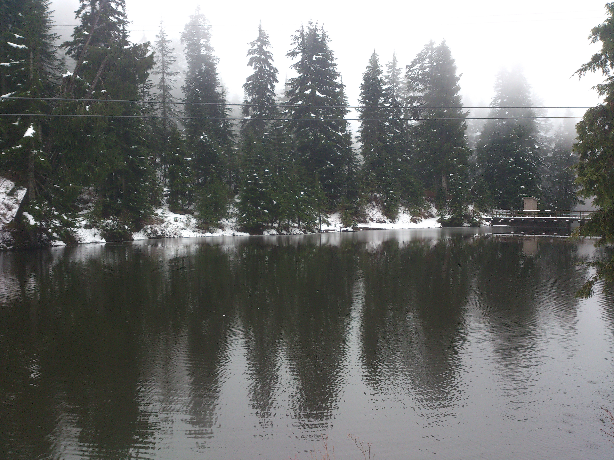

It's an hour before my first of three midterms in the next six days and I thought what better way to relax than to write a little bit. I missed logging the last couple days of the trip but I'll try to add a couple pictures and maybe share a little bit about the days in this blog. For a change, I'll start with some music I've really been into lately. Since I've been studying almost nonstop for the last week, I've been looking for some good music to listen to while studying. Kygo has always been my go-to for long mixes that keep me going. I finished a mix which then shuffled through recommended music and I ran into this awesome remix of Nothing Really Matters by Mr. Probz mixed by Kav Verhouzer. I'm listening to it right now on repeat as I write this!
So moving on, I'll highlight a couple of the things we did the last couple days in Vancouver! I left off the night before we went to Grouse Mountain which turned out to be a really awesome trip! We took all sorts of public transportation to get there, going by Sky Train then Sea Bus and then regular bus, finally taking the gondola up the mountain. Up the mountain it was really a whole different world.

We spent a couple hours exploring the top of the mountain. It was some of the softest snow I had ever touched. We wandered around throwing snowballs at each and rolling snow into giant snowballs. It was actually quite painful since none of us brought gloves - at one point on the bridge, Nemo and I got into a humungous snow fight, launching mounds of snow on the bridge railing at each other. My hands were so cold I felt like they were frostbitten. We hiked for quite awhile, finding out that the path made a complete loop back to the home base gondola station. By the end of it I was so cold and wet that I was excited to be back and return to warmth. My shoes ended up soaked from walking in the snow so I ended up walking and riding public transportation back barefoot. It was quite an interesting experience. I felt like people were watching me and judging me for not wearing shoes. Shoes are such a norm and not wearing them attracts attention. To an extent, I felt like a homeless person. At one point, a homeless person came up to me and asked for change. I gave her some, and the first thing she told me was that I wasn't wearing shoes. Nemo made fun of me telling me that the homeless person tells the homeless looking person they aren't wearing shoes.
The day was quite the experience. I'm fairly tired now and I have a midterm coming up so I'll pause there on the stories. I plan on posting intermittently about my various thoughts and adventures. I recently finished the Steve Jobs biography by Walter Isaacson and it is my hope to post my reflections on the book. Thanks for reading!